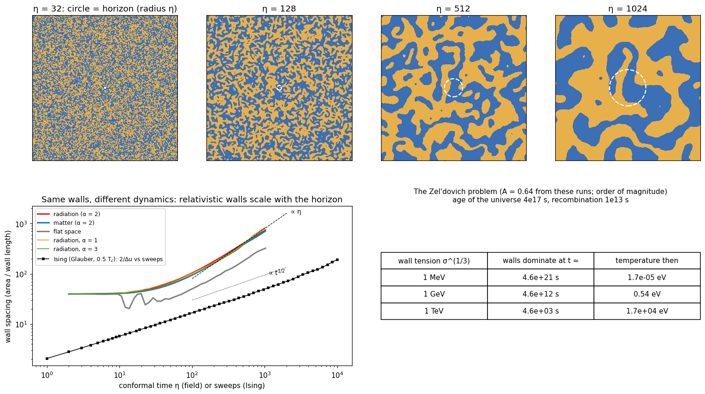
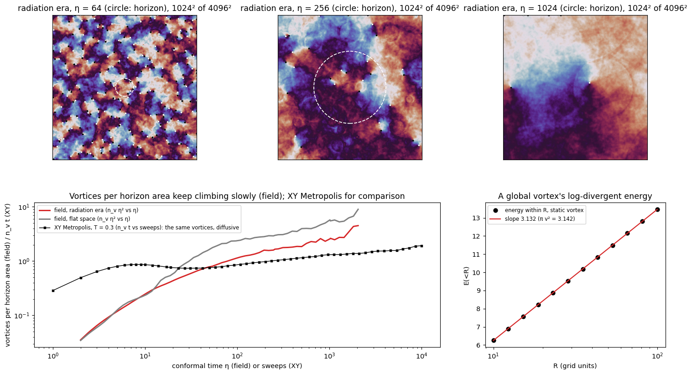
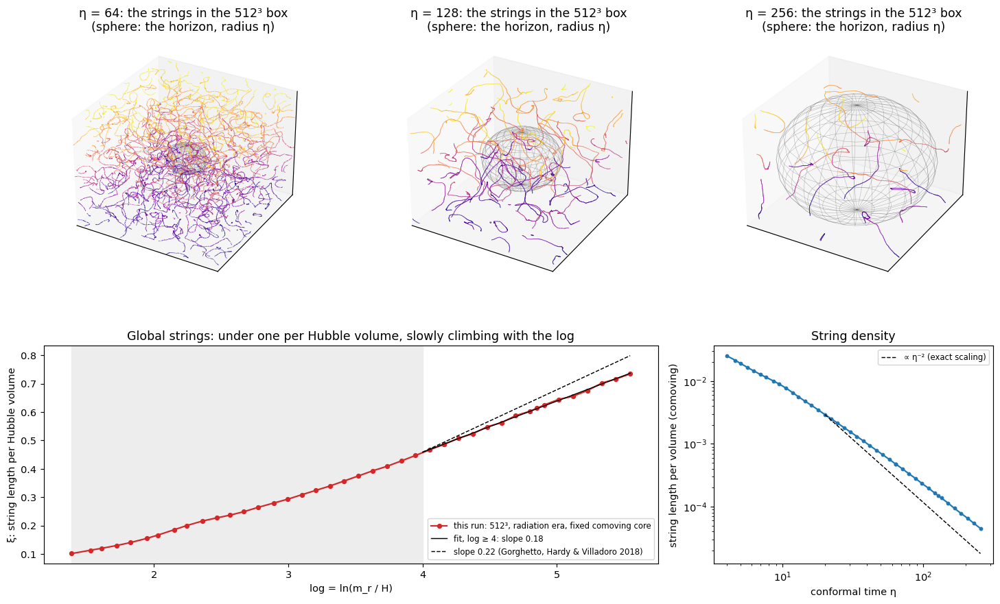

Defects in an expanding universe
In the early universe defects are fields obeying wave equations, and space expands under them. Walls then keep pace with the horizon until they dominate everything, the Zel'dovich problem, while global strings keep about one per horizon, slowly climbing.
Walls in an expanding universe
In the early universe the walls aren't spins on a lattice but a field obeying relativistic wave equations, in a space that is expanding. Solved on an 8192 × 8192 grid, starting from the pattern the Kibble–Zurek step predicts, the network keeps about one wall per horizon: the spacing grows almost in step with the horizon, far faster than the lattice walls' t1/2. The measured growth, η0.87–0.90, is still a bit short of the textbook η1; one run over a factor of three in time can't tell a slow approach to scaling from a real difference. A network that keeps pace with the horizon eventually outweighs everything else: walls with a tension of (1 TeV)³ would dominate the universe a couple of hours after the Big Bang. That is the Zel'dovich problem, and why stable walls must be rare or absent.

Vortices as a relativistic field
The same U(1) symmetry, now as a complex field obeying wave equations in an expanding universe. Unlike the lattice vortices, which annihilate as ln(t)/t, the number of vortices per horizon keeps creeping up.

Cosmic strings in 3D
In three dimensions the vortices become strings, the global strings of axion cosmology. Simulated on a 512³ grid on the GPU, the network keeps roughly one string per Hubble volume as the universe expands, but the number per horizon creeps upward with the logarithm of time, at 0.18 per unit of the log, close to the 0.22 found in the large published simulations this setup follows. That slow climb matters: extrapolated over the ~70 units of log to the real early universe, it sets how many axions the strings radiate.
